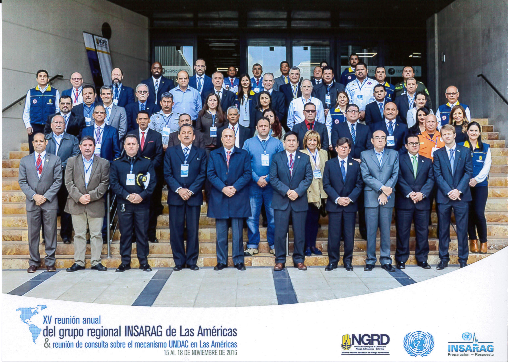

La XV Reunión anual del Grupo regional de INSARAG en las Américas se llevó a cabo en conjunto con la III Reunión de consulta sobre el mecanismo de cooperación para la respuesta a emergencias del Equipo de las Naciones Unidas para la Evaluación y Coordinación en casos de Desastres (UNDAC por sus siglas en inglés) del 16 al 18 de noviembre del 2016 en Bogotá, Colombia.
La reunión fue auspiciada por la Unidad Nacional para la Gestión del Riesgo de Desastres (UNGRD) de Colombia y organizada conjuntamente con la Oficina de Coordinación de Asuntos Humanitarios de las Naciones Unidas (UN OCHA), en su calidad de Secretaría del INSARAG y administradora del sistema UNDAC.
Hubo un total de 56 participantes de 14 países de la región, 1 organización regional (CEPREDENAC), 2 países representando los otros grupois regionales y la comunidad global de INSARAG, la Federación Internacional de Sociedades de la Cruz Roja y Media Luna Roja representado por la Cruz Roja Colombiana, la Organización Panamericana de la Salud (OPS), así como la Oficina de Coordinación de Asuntos Humanitarios (OCHA) en su calidad de Secretaría de INSARAG. Los países y organizaciones estuvieron todos representados por sus puntos focales INSARAG o en delegación de los puntos foclaes, así como con algunos miembros y puntos focales UNDAC.
A continuación, se puede encontrar el resumen de la reunión, junto con sus anexos, incluyendo la lista de participantes, así como todas las presentaciones realizadas durante la reunión.
Resumen de la reunión del Grupo regional de INSARAG en las Américas 2016

A continuación encontrarán también el video de bienvenida a la reunión del Presidente del Grupo regional de INSARAG en las Américas, Dr. Carlos Iván Márquez Pérez, Director nacional de la UNGRD en Colombia.